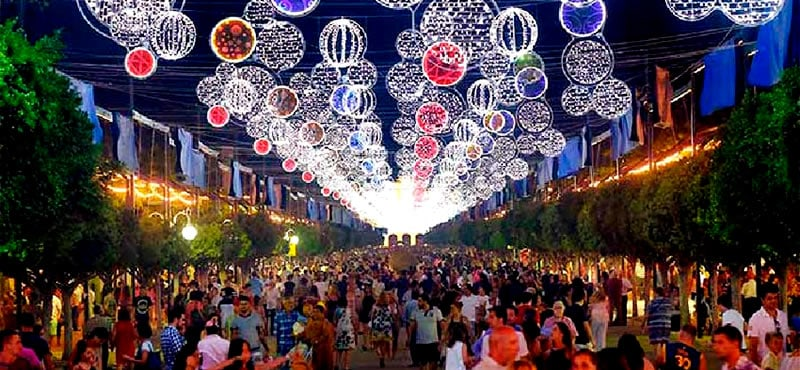

Galleria
Queste sono alcune delle foto più belle che ho scattato durante il mio viaggio. Ogni immagine rappresenta un ricordo unico.


Scopri i luoghi che ho visitato durante il mio viaggio a Malaga. Una città ricca di cultura, storia e bellezza naturale.
Queste sono alcune delle foto più belle che ho scattato durante il mio viaggio. Ogni immagine rappresenta un ricordo unico.
Questa presentazione racconta i momenti salienti del mio viaggio a Malaga, con immagini e dettagli dei luoghi visitati.
Malaga è famosa per la sua cucina deliziosa, che combina sapori mediterranei con influenze locali.
Malaga ospita eventi spettacolari durante tutto l'anno, come la famosa Feria di Malaga e le celebrazioni della Settimana Santa.
